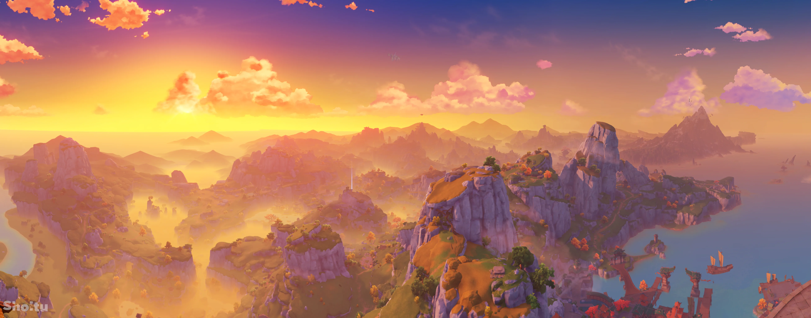

Genshin Impact diễn ra tại đại lục Teyvat, bao gồm bảy quốc gia lớn: Mondstadt, Liyue, Inazuma, Sumeru, Fontaine, Natlan và Snezhnaya; mỗi quốc gia được cai trị bởi một vị thần.[27] Đảo Thiên Không được cho là nơi cư ngụ của các vị Thần, nơi họ sẽ dõi theo người dân từ trên trời cao.[28] Dưới lòng đất là tàn tích của quốc gia Khaenri'ah đã bị các vị thần hủy diệt 500 năm trước, trước khi các sự kiện trong trò chơi diễn ra.[29][30] Không giống như bảy quốc gia còn lại, Khaenri'ah là một quốc gia vô thần. Nhân vật của người chơi, Nhà Lữ Hành (nam hoặc nữ tùy vào lựa chọn của người chơi), bị tách khỏi người anh/em của họ và bị mắc kẹt trong Teyvat. Đồng hành với Nhà Lữ Hành là Paimon, một nhân vật có vai trò hướng dẫn và bắt đầu cuộc hành trình tại đại lục Teyvat để tìm kiếm người anh/em thất lạc của mình. Nhà Lữ Hành nam tên là Aether và Nhà Lữ Hành nữ tên là Lumine. Mặc dù người chơi có thể chọn tên tùy ý nhưng người anh/em của Nhà Lữ Hành (nhân vật không được chọn khi bắt đầu trò chơi) sẽ luôn gọi Nhà Lữ Hành là Aether hoặc Lumine (tùy vào nhân vật mà người chơi chọn), bất kể tên tùy chỉnh của họ. Mỗi quốc gia được liên kết và tôn thờ một trong "Bảy vị chấp chính trần thế; Thất Thần", trong đó mỗi vị thần cai quản một quốc gia. Mỗi thành viên của bảy vị thần đều được liên kết với một trong các Nguyên Tố của trò chơi và được phản ánh trong các khía cạnh của quốc gia đó. Các vị thần bao gồm: Thần Tự Do (Barbatos), Thần Khế Ước/ Nham Vương Đế Quân (Morax), Thần Vĩnh Hằng/ Lôi Điện Tướng Quân (Baal/Beelzebul), Thần Trí Tuệ (Buer/Kusanali), Thần Công Lý (Focalors), Thần Chiến Tranh (Murata) và Nữ Hoàng Băng Giá. Bảy vị thần cai trị các vùng Mondstadt, Liyue, Inazuma, Sumeru, Fontaine, Natlan và Snezhnaya.[31] Tuy nhiên, vị trí Thất Thần có thể thay đổi theo thời gian khi vị thần đương nhiệm qua đời.[32] Những cá nhân cụ thể được Thất Thần lựa chọn sẽ được cấp Vision - một loại đá quý ma thuật giúp người mang chúng có khả năng điều khiển Nguyên Tố được khảm trên Vision được ban tặng. Những người sở hữu Vision có cơ hội lên Đảo Thiên Không và tự mình trở thành thần, sở hữu 1 Gnosis, biểu tượng sức mạnh của Thất Thần.[33][34] Mondstadt, thành phố của tự do, tôn thờ Phong Thần Barbatos, nằm ở phía Đông Bắc đại lục Teyvat, giữa những dãy núi và đồng bằng rộng lớn.[35] Thành phố được bảo vệ bởi Đội Kỵ Sĩ Tây Phong, những người được giao nhiệm vụ bảo vệ Mondstadt và người dân.[36] Về phía Tây Nam, Liyue tôn thờ Nham Vương Đế Quân Morax và là bến cảng giao thương lớn nhất Teyvat. Thành phố cảng này được cai trị bởi Thất Tinh Liyue, một tổ chức gồm 7 thương nhân giàu có nhất thương cảng. Tiên Thú và những người được coi là thần được gọi là Tiên Nhân, bao gồm cả Nham Vương Đế Quân.[37][38] Phía bên kia biển về phía đông nam là quốc đảo Inazuma theo chủ nghĩa bế quan tỏa cảng, được giám sát bởi Raiden Shogun (hay còn gọi là Baal) và ba hiệp hội của Hiệp Hội Tam Cực:[‡ 1] hiệp hội Tenryou, hiệp hội Kanjou và hiệp hội Yashiro; lần lượt giám sát các vấn đề quân sự - chính trị,[39] tài chính - đối ngoại,[40] và lễ nghi - tín ngưỡng.[41] Snezhnaya, được cai trị bởi Băng Thần, đã cử các nhà ngoại giao Fatui, lợi dụng quyền lực và sức ảnh hưởng của mình để can thiệp vào vấn đề nội bộ của các quốc gia còn lại.[42] Fatui cũng được lãnh đạo bởi 11 Quan Chấp Hành, những người được Nữ Hoàng trao quyền lực và sức mạnh vượt trội.[‡ 2] Ngoài Fatui ra, còn có một thế lực khác trong trò chơi, đó là là Giáo Đoàn Vực Sâu - một tổ chức ma vật tuyên bố mình là kẻ thù của toàn nhân loại, chúng được dẫn dắt bởi "Hoàng tử/Công chúa Điện Hạ" - chính là người anh/em thất lạc của Nhà Lữ Hành.[43][44][45] Mỗi quốc gia lấy cảm hứng từ các địa danh và nền văn hóa ngoài đời thực: "Mondstadt" trong tiếng Đức nghĩa là "Thành Phố Mặt Trăng" và lấy cảm hứng từ nước Đức thời Trung Cổ; Liyue (璃月) dựa trên Trung Quốc; Inazuma (稲妻, Sấm sét) dựa trên Nhật Bản; Sumeru, được đặt tên theo Núi Tu Di, lấy cảm hứng từ văn hóa Bắc Phi, Tây và Nam Á; Fontaine, (tiếng Pháp của "Fountain" - đài phun nước) dựa trên nước Pháp; Natlan dựa trên nền văn hóa của người Mỹ bản địa - Tây Phi và Snezhnaya (Снежная, Tuyết) lấy cảm hứng từ nước Nga.
